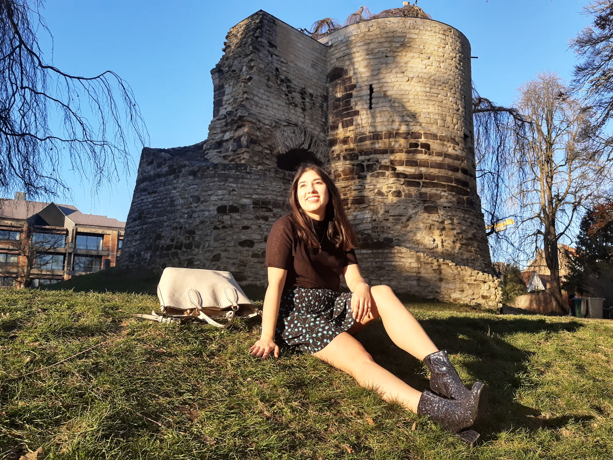

Buenos Aires, de hoofdstad van Argentinië
08/03/2026 por Disnelly
In 2017 reisde ik voor de eerste keer naar Buenos Aires, Argentinië. Ik was heel opgewonden om Buenos Aires te bezoeken omdat deze stad beroemd is als Parijs van Zuid-Amerika. Toen ik naar Argentinië arriveerde, voelde ik me eigenlijk klein omdat de stad enorm is. Ook was het de eerste keer dat ik alleen naar buitenland had gereisd. Ik herinner me dat het zomer was en de dagen waren heel warm. Ik sprak in Buenos Aires met Javier af om onze vakantie te beginnen.
Eerst bezochten wij het “Argentijnse Nationale Congres”. Het is een monumentaal gebouw in neoklassieke stijl met een groene koepel. Nadat wij het gebouw hadden bewonderd, volgden wij een rondleiding door het gebouw.
Na de rondleiding verdwaalden wij in de stad. Ik was onder de indruk van de schoonheid van de stad. Wij arriveerden in de wijk “La Boca”, het had een bijzondere sfeer. De huisjes waren met mooie kleuren gele, rode en blauwe. Er waren lokale singers en mensen die tango dansen.
Wij bezochten “La Plaza de Mayo” waarin veel fotogenieke gebouwen stonden maar het meest opvallende is de “Casa rosada” waarin de argentinische regering werkt en een mooie roze kleur heeft. Bovendien konden wij fantaseren toen Evita Peron zei "Don't cry for me Argentina”. Aan het einde van de “9 julio” laan staat het Obelisk wat een symbool van Buenos Aires is. Daarna bezochten wij de wijk "Puerto Madero", deze wijk is een moderne buurt waarin veel grote en elegant gebouwen staan als de ambassade van Nederland en België. Bovendien ligt de “Puente de la Mujer”. Over het algemeen ben ik geïnteresseerd in de techniek van de bruggen, daarom was ik enthousiast om de “El Puente de la Mujer” te ontdekken. Ik vind deze brug heel mooi en de vorm lijkt als een vrouw die tango danst.
Daarna wandelden wij in het park “Tres de Febrero” en bewonderden de meren, de rozenperken vol bloemen en de palmbomen. Toen de nacht viel, gingen wij naar de wijk Palermo om lokale pizza te eten en terwijl wij naar ons hotel wandelden, aten wij traditioneel ijs van dulce de leche.
Aan het einde van deze reis voel ik dat Buenos Aires een onvergetelijke indruk op me heeft achtergelaten. Niet alleen door de schoonheid van de straten en monumenten, maar ook door de warmte van de mensen, het ritme van de tango dat lijkt te zweven op elke hoek. Ik ga weg met herinneringen vol vreugde dat deze stad altijd een speciale plaats in mijn geheugen zal hebben.
